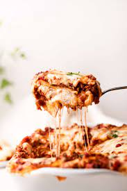

Lasagna

Classic Lasagna
To make lasagna you will need:
Ingredients
One (1) package lasanga noodles
One (1) pound ground beef or turkey
One (1) jar of pasta or marinara sauce
Optional:
Substitute half the ground beef or turkey with spicy Italian sausage
I like to add mozzarella as well as parmesan to give it a nice cheese pull
We have a recipe here if you want to make your own pasta sauce
Reserve a little pasta water to add to your sauce!
To get started:
Bring a large pot of water to a boil, add salt and a little olive oil to the pot. Add noodles and cook until al dente.
Pre-heat your oven to 350
For your meat mixture:
Heat a medium skillet and add your olive oil, finely diced onion and ground beef. Brown your beef, drain and set aside.
Mix ricotta and parmesan in a bowl with your Italian seasoning, salt and pepper.
Steps
- Boil your noodles
- Brown your meat mixture
- In a glass pan pour some of your sauce, mix the remainder of the sauce into your meat mixture
- On top of the sauce create a layer of noodles
- Spread an even layer cheese
- Top with the meat and sauce mix
- Repeat until you have at least three layers
- Save enough of the cheese mix to make a layer
- Cover with foil and bake for one hour at 350
- Uncover, top with remainder of cheese and bake uncovered for fifteen minutes or until cheese has melted